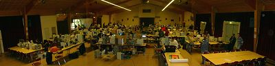
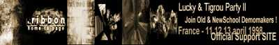
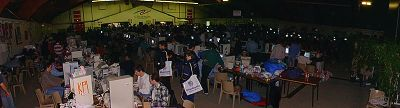
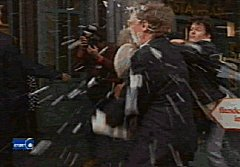

Looking for a good graphician
[14/08/99]
Grinders label is looking for a graphician to do their music-disc graphics. You think you are the best for this job? Send an e-mail to doktor@???? for more informations.
(Yes / Orange Juice)
hugi diskmag #16 is out
[11/08/99]
just in case you didn't do it yet: go grab hugi issue #16 and get lost within 2,1 mb of articles and stuff.
(Snotrag / Neithernor.org)
Jobs part updated
[10/08/99]
All is in the subject =)
(Chandra / Orange Juice)
Dialogos 99
[10/08/99]
Unlock/Vantage is organizing a bustrip from Switzerland to the Dialogos 99 Party. The trip will go trough Switzerland and then leaving in Basel/Bale to the France and short after back to Germany. They will pick up people from all over the travel route. You can get more informations under http://www.profzone.ch/vantage/bustrip.
(Yes / Orange Juice)
Scene.org employment
[10/08/99]
scene.org needs more volunteers - looking for an active webmaster and SQL-aware CGI programmers, contact staff@????!
(Yes / Orange Juice)
ASM 99 results and productions
[09/08/99]
ftp://ftp.scene.org/incoming/ASM99/ for all productions and ftp://ftp.scene.org/incoming/ASM99/asm99results.txt for finals results.
(Yes / Orange Juice)
Webcams
[21/07/99]
Hop, here are some demoscene webcams, check it :)
(Chandra / Orange Juice)
Razor 1911
[20/07/99]
Razor 1911 are reforming their Demo Division, they require Coders, Musicians and 3D artists/Modellers. More news can be found on their website at http://you.genie.co.uk/rzr.demos/.
(Chandra / Orange Juice)
Inscene report
[18/07/99]
This week-end happened the first INSCENE, the only belgian party since the regretted Wired. Though there was less people than the organizers expected (about 50 people), the fun was there.
New records have been established in 4kg HD throwing competition : the shortest distance (50 cm) and the longest (10m30) ;-)
Due to the lack of competitors, there were not many entries in the competitions ; but we discovered great prods, like the 100kb game from PPPTeam and a great linux demo from Aspirine - the only entry in the demo compo :(
To conclude, this was a very friendly party which was worth it . I hope that there will be more cool guys next year and that INSCENE will become the new Wired - for the fun, it's on the right way ;) - You can download the prods on scene.org.
(tOmCaT / Logout)
LTP3
[17/07/99]
The LTP3 event will held soon (end of August). This demomakers-only party (maybe the time, yet, for you to share some tips with other people like you, easy to do when everyone is a scener ;) organized by us and some big french groups (Bomb, Ribbon, Nomad and Pulse Fr) will take place in France close to Paris and has always been the release place of very nice prods (cf the FTPs :).
Go to the web site (http://ltp-planet-d.net (france) or http://tgv.citeweb.net/ltp/ (usa)) and register you, the 3/4 of the seats have already been reserved !!!
(Chandra / Orange Juice)
Mr Boom 3.0 released.
[14/06/99]
ipx network compatible bomberman/dynablaster clone !!!
up to 8 players, featuring pushing bomb, remote control, rabbit riding with Gravis Ultrasound support ! Go to leech it :) (click on the title).
(Yes / Orange Juice)
USMPlay, v1.1
[10/06/99]
freddyV has released a new version of Usmp (1.1 final), click on the title
(Chandra / Orange Juice)
Realtech & Olympus
[09/06/99]
They are alive, and they have released a little free game, a kind of improved nibbles. It runs under DOS (EOS and Midas). Let's click on the title to get it !
(Chandra / Orange Juice)
Takeover'99 Photos
[09/06/99]
Just click on the title =)
(Chandra / Orange Juice)
Linux Game Compo
[09/06/99]
A game compo will take place on June the 20th on #linuxscn, IrcNet. Random teams made of a musician, a graphist and a coder will have to make a linux game (no size limit) in 6 hours for a given subject. Beginning time and further information will be given on the #linuxscn homepage (cf title link). Mail questions to redpingu@????.
(Chandra / Orange Juice)
TakeOver
[05/06/99]
We are at TakeOver 99 (Eindhoven / Ne'v'erland).
Stay tuned en read the live report.
(Yes / Orange Juice)
Icon Contest
[23/05/99]
Orange Juice launches an icon contest ! This a fast gfx competition, lets get more info there !
(Chandra / Orange Juice)
Plug - In : an instrumental trio
[06/05/99]
MOBY / SANITY / NOOON and his famous band has released an EP. Back to roots with this very nice work. Buy buy buyyyyyy.
(Yes / Orange Juice)
Kenet
[06/05/99]
Design above all.
(Yes / Orange Juice)
Universe Website
[06/05/99]
The website of the russian group universe has moved. Update your bookmark :)
(Yes / Orange Juice)
Ukonx 99
[06/05/99]
All productions of Ukonx party are available.
www.multimania.com/ukonx99.
Here is the official website.
http://web.synapse-dev.fr/manu/ukonx99
(Yes / Orange Juice)
Evoke 99
[06/05/99]
Evoke will be held in germany (20.21 and 22 august 1999)
Join them.
(Yes / Orange Juice)
Equinox - Oldschool time
[11/04/99]
Equinox new web site is online. You can find a demo coded in 1992. The loader was never finished, and the demo abandoned Finally finished in 1999 (!!) it has been released for nostalic people. They are amazing !
(Yes / Orange Juice)
Enjoy the source
[30/03/99]
Amazing ! Statix released the complete source code for his bleam demo, which won the assembly 98 windows demo compo. You can get it from his website http://ban.joh.cam.ac.uk/~alex.
Hey alex, I love you ;)
(Yes / Orange Juice)
New FTP mirror archive !
[11/03/99]
Tired of all those different ftpserver to connect to to get the newest releases, Redhound decided some time ago that it would be nice to setup a huge mirror site that would contain all big scene archives. It took a while to set this all up, but now the big threesome are united on one ftpserver :
* The Hornet archive -> /pub/hornet
* The Scene.org archive -> /pub/scene.org
* The Trebel archive -> /pub/trebel
(source : comp.sys.ibm.pc.demos)
(Chandra / Orange Juice)
American Parties
[07/03/99]
Check info for Bang! and Sping Break (American Parties). Ready to take the plane ? :)
Bang : http://www.scene.org/bang!/
Sb99 : http://skaro.nightcrawler.com/sb99/
(Yes / Orange Juice)
Hugi #14
[07/03/99]
Click on the title to Download the last issue of Hugi.
(Yes / Orange Juice)
Parties Files
[07/03/99]
Productions from Volcanic 99, Hype 99 and Ambience 99 are available on ftp.scene.org
(Yes / Orange Juice)
Past Final
[07/03/99]
The final version of PAST from Orange Juice (#1 at Volcanic V) will be released today.
(Yes / Orange Juice)
TakeOver 99
[07/03/99]
The website of this famous Party is online.
(Yes / Orange Juice)
Mind's Evolution Final
[07/03/99]
The final release of Popsy Team demo (ranked #3 at volcanic V) is available.
(Yes / Orange Juice)
Ambiance 99
[28/02/99]
Now you can d/l all productions of this party (put online faster than volcanic :)).
(Yes / Orange Juice)
Volcanic V results
[24/02/99]
Orange Juice report is here and Volcanic Results are there ! Go go go :)
(Yes / Orange Juice)
neithernor1999 - www site
[01/02/99]
today neithernor1999 party page is on the worldwideweb. you find it at http://www.neithernor.org - which also contains the sdi, raven9x, suspect records and other scene internet sites (fine webspace also for you! ask the webmaster). nn99 will be held in michelau/south germany 21-23.may.1999. please check the homepage for details. don´t forget to subscribe to the neithernor news list.
(e605 / sdi^tojs!x^sure)
Looking for Graphicians.
[28/01/99]
Best gfxians of the world wanted ! Funky Musicdisk in project. No low-res stuff ! Want to contribute for Theralite ? Ctc Gainx at ofalk@???? to join the Team !
(Yes / Orange Juice)
TRIP ! What a party !
[24/01/99]
Trip will be held 25 - 28 march 1999 near Florence (ITALY)! Prizes will be fabulous (BRAND-NEW Workstation by SiliconGraphics, a Spark Station 5 by Sun, 3D SCANNER+ HANDLE + 3D ENGRAVER by Roland, a Digital Mixer+HD music recording set by Roland, a Professional Keyboard by roland and 19" Flat Screen Monitor). For french people, Deathstar organize a bus from france (Paris) so go to their webpage.
(Yes / Orange Juice)
Servo'99
[07/01/99]
The weird french party Servo'99 (second edition) will held 21 of march 99 or 21 of june 99 at Marseille (south of France) and in Triplex with two other big french towns.
I need some co-organizers (I already have some of the sponsors, no pb)... (christian artin)
(Chandra / Orange Juice)
Ambiance 99 web site
[06/01/99]
The new Ambience 99 web site is at the URL you can reach by clicking on the title of this news (fieeeew, all these to make 3 lines ;)
(Chandra / Orange Juice)
pain linux loader
[03/01/99]
pain (diskmag) is now available for linux. support!
(e605 / sdi^tojs!x^sure)
Download TP8 Productions
[29/12/98]
Z / Nomad has put some of the best productions of the TP8 on his web site ERROR-404.COM
(Yes / Orange Juice)
WorldCup Syndrome ?
[29/12/98]
Two french crews won the two first place of the "THE PARTY VIII" demo competition. NOMAD and BOMB take 1st and 2nd place with more than 5000 points for NOMAD and more than 4000 for BOMB. Nice work dudes : Ecstasy, Skal, Krafton, Made, Titan, and Djamm rulz.
(Yes / Orange Juice)
TP8 Life REPORT !!!!!!
[28/12/98]
Life report from TP8 by our special Reporter Sparcus / Nostalgia (remember TakeOver 99 !!).
Orange Juice - First again.
(Yes / Orange Juice)
The Party 98 Release
[28/12/98]
Here you can find some productions released during TP8 and some photos of the FRENCH TEAM !
(Yes / Orange Juice)
Hugi #13 online
[28/12/98]
An online version of the fantastic Hugi mag issue #13 !
Just click on the title !
(Yes / Orange Juice)
Another mag : Heroin
[16/12/98]
A new mag. A new point of view of the demoscene ? Try this one and make your own opinion.
(Yes / Orange Juice)
PAIN OUT !
[10/12/98]
Last PAIN was released !!!! Go go go to download it !!!
(Yes / Orange Juice)
Hugi #13 released
[06/12/98]
Hugi #13 has been released yesterday. Lot of articles, lot of scene rumours and news. Another very good issue.
(Yes / Orange Juice)
Beam
[28/11/98]
The homepage of black maiden´s "bare electronic art magazine" got redesigned and is available now.
(Yes / Orange Juice)
Ambience 99 Infofile
[19/11/98]
Ambience 99 will be held 26-27-28 Februari 1999 in Venlo - The Netherlands. Much compos, seperated Quake part, over 800 scene visitors! Download the infofile (title link) !
(Yes / Orange Juice)
Trebel - Soon a new archive ?
[18/11/98]
Is this a new big scene archive (as Hornet Archive was) comming ? They seem to be really working on it.
(Chandra / Orange Juice)
Movement'98
[18/11/98]
The 14th, the cybervisitor-registration for MOVEMENT'98 has started. (pj dynamix ~ comic pirates)
(Chandra / Orange Juice)
Axia - A Game by Demomakers :)
[17/11/98]
some of the former demo sceners that worked on Axia are : Dark Avenger, Pure Evil, Windsinger from DDD Tran
Mesonyx, Mot, and Amusic from Iceland and Greece...
Orange Juice support the scene and the after scene :).
(Yes / Orange Juice)
Hugi Size Coding compo #5
[08/11/98]
The Hugi Size Coding Compo #5 begins today ! Try to do your best to win.
(Yes / Orange Juice)
New Site ! Tpolm.Com
[07/11/98]
Website of Tpolm is open, only a quizz is online but the site will be updated regularly with a number of interesting science projects.
(Yes / Orange Juice)
PAIN ! Permanent Link
[07/11/98]
It's the beginning of a long friendship between Orange Juice and Pain ! Next days you will find a permanent link to the PainDownload Page. Try to click on the title link to see what i mean :).
Thanks a lot Fred ! Pain RULZZ
(Yes / Orange Juice)
Shine #3 OUT !
[07/11/98]
Want to know last rumours of demoscene ? New issue of Shine released !!
(Yes / Orange Juice)
demonix
[07/11/98]
the demonix (demos for unix and other plattforms) moved. check also the news linux.demo webring.
(e605 / sdi^tojs!x^sure)
TP 98 - Reservation Open
[04/11/98]
Reservation open for The Party 98 !
the price ? 300KK as last year :-(
and as last year, Girls will pay :(((
Buy your tickets nowww !
(Yes / Orange Juice)
Compete Movement'98 on the net !
[28/10/98]
Movement'98 is going to be held both on the partyplace (Israel) and on the internet ! You could vote, compete, see live video, hear live audio, interviews and more ! This time - not another boring website but an ACTIVE web site from the party place, allowing YOU to take part in the party! Sounds intersesting? We'll soon fill you up on more details!
contact: Civax@????
party email: mov98@????
(civax)
(Chandra / Orange Juice)
soundtracker(x11/linux)
[27/10/98]
it's possible! a xm/mod tracker for x11/linux.
(e605 / sdi^tojs!x^sure)
NoooN ! RA Website
[24/10/98]
Don't know RA ? Don't know NoooN ? So let's go to http://perso.club-internet.fr/nooon
Hey RA ! We are waiting for all your fantastics pictures.
(Yes / Orange Juice)
A CP in Argentina !
[23/10/98]
Asociación Civil Intervalo & Krisalida is organizing the first demoparty in Argentina and maybe the biggest one ever in South America. "The Flash Party" will be held in Buenos Aires from December 25th to 27th. Check out the website (Spanish knowledge required =))
hC/The Imago Project
(Chandra / Orange Juice)
Pulse - Unemployment Progress
[20/10/98]
The unemployment spider arrives on demoscene.
Some members of Pulse Poland were kicked !!!
Falcon, KeyG, Spy, Lazur, Yoghurt, Lucky and Technomancer are available ! Sure they will join other groups very soon.
(Yes / Orange Juice)
Movement'98 web site online!
[18/10/98]
Movement is the annual Israeli demo party. Go visit the web site and see what the israeli scene is all about. Invitation will be soon on the web.
contact man: civax/moon hunters (civax@????)
organizing email: mov98@????
(Chandra / Orange Juice)
Tuner
[11/10/98]
The goal of this site is to organize Mods Compos on the web. It provides also a lot of info about the music scene.
(Chandra / Orange Juice)
Th3 Italian Gathering 1998
[11/10/98]
JapoTek has won Th3 Italian Gathering 1998 demo compo with the demo called Dual Soul (http://www.cis.it/japotek).
(Chandra / Orange Juice)
RC5 contest with Distributed.net
[01/10/98]
Orange Juice created a team named "Demoscene" on distributed.net. Join it ! Click on the title of this news !
(Chandra / Orange Juice)
Comic Pirates succeeding Hornet ?
[30/09/98]
Well, Tonic / Comic Pirates is workin on a new mager FTP site. And as you know a new Hornet is not a one man job, so if you feel like taking part in making some scene history you should contact Tonic.
And hey! Spread the news! (Makke / Comic Pirates)
(Chandra / Orange Juice)
GFX Compos.
[26/09/98]
2 New compos on the famous  !
!
One for the Hugi Diskmag :
http://www.pixel.scene.org/compo_hugi.html
One for the Network website (http://scene-central.com)
http://www.pixel.scene.org/compo_network.html
(Yes / Orange Juice)
Hornet Shutdown
[25/09/98]
The worst news i could announce. End of an Era, Hornet is shutting down. "As a result, the archive will be dismantled as soon as possible. All html pages will be deleted. The search engine will cease to function. The /incoming directory will be cataloged, emptied, and removed. All sites being web-hosted under /info will find new homes. Our mirror sites will no longer be resolve. At this point, there will be no web interface."
Orange Juice greets you all, Hornet Team.
(Yes / Orange Juice)
IT Gathering First demo
[25/09/98]
"Dual Soul" by JapoTek as won the demo compo at The Italian Gathering 1998 (11-14 september).
http://www.cis.it/japotek
(Yes / Orange Juice)
GfxZone is Moving !
[24/09/98]
Notice this new GfxZone Homepage http://inf.ml.org/scenegfx and don't forget to change your bookmark with.
(Yes / Orange Juice)
#PIXEL 30mn Compo
[23/09/98]
All entries of the 09-23-98 #Pixel with results :).
Feather + Smoke + Sh^ar + Thor inside.
don't forget the #PIXEL HOME on http://pixel.scene.org
(Yes / Orange Juice)
PTC 2.0 Api ! The Interface
[21/09/98]
Gaffer just announce that the PTC 2.0 api is almost ready. Beta/alpha versions are up.
(Yes / Orange Juice)
Scene.Org ! Generation Next :)
[21/09/98]
Redhound improve Scene.org !
comp.sys.ibm.pc.demos, comp.graphics.algorithms, comp.compression, comp.compression.research can now be read on news.scene.org.
(Yes / Orange Juice)
#Pixel HomePage
[20/09/98]
Irc channel #pixel got a new homepage. It contains all the news related to #pixel, lists of people who visit pixel, and results of grafix compos that happen on #pixel. It's also very open to all kinds of grafix related suggestions.
(Yes / Orange Juice)
Panard Vision SDK DJGPP Released
[20/09/98]
Coded by Olivier Brunet, "Panard Vision" is a full featured free (for non commercial use) portable Realtime 3D engine allowing for high speed/quality rendering on Win32,Dos, Linux platforms. Only software rendering is supported with DJGPP (no hardware drivers). Patch for Dirext 6 is available.
(Yes / Orange Juice)
dialogos98
[16/09/98]
demoparty, 13-15.11.98 (jena.germany)
unlike other parties, this one is not going to be held in an ordinary sports or public hall, this time you have the chance to experience real scene spirit combined with the excellent atmosphere of a great discotheque. The 'Kassablance Gleis 1' provides all of its facilities for one whole weekend, including the outstanding full technical equipment for sound, light and video. we offer a program full of atmosphere, ambient music, live shows, dj performances and of course all the competitions the pc demo freak needs. this party is going to be a special happening, a real delicacy among this year's parties.
come and experience more than just the usual things, come to Dialogos '98!
(e605 / sdi^tojs!x^sure)
EVOKE98 - The Productions !
[13/09/98]
Redhound has released some productions of the Evoke98 held in AAchen / Germany this week-end. Go and make your opinion about releases.
(Yes / Orange Juice)
RTS - The results
[12/09/98]
Here are the RTS party results !
It was held in France near Grenoble (5-7 september).
(Yes / Orange Juice)
Mod Plug Player
[31/08/98]
New versions of the famous module player. Mod Plug Player is now v1.38 (fixing some minors and major bugs (better sound quality), and adding some new features like the "minibar" mod a la winamp). Mod Plug Plugin (Netscape, MSIE and Opera) is now v1.91.02 and gets the new features of the player. The Mod Plug Tracker is now Beta 2.3 (new equalizer, instrument library, ...)
(Chandra / Orange Juice)
GFX Zone
[29/08/98]
GFX Zone regulary makes some cools reports and reviews. For example, the last one is about the Dreams 2 demo compilation by Imphobia. Very well done !
(Chandra / Orange Juice)
Japanese Demo Competition
[27/08/98]
My name is Shigeo Kusama, director for countdown Groove, japanese dance music TV. We are introducing megademo scene in Scandinavia and wants to promote the scene in Japan. Currently we are doing a megademo competition on Japanese TV and welcoming entries. This is an opportunity to be shown on Japanese TV for 2 million viewers, including thousands in the game & computer industry.
The piece should be within 10 seconds, with music and original design and animation. The only requirement is the use of "CD GROOVE xxx", the logo title of our program. The deadline is Sept. 7, monday 1998. The piece should be sent via e-mail to my address (click on the title)
(Chandra / Orange Juice)
DreamHack '98
[27/08/98]
It is now confirmed that Bjorn Lynne, (Dr.Awesome / Crusaders) will be at the party selling CD's, and he's also sponsoring with compo prizes.
It's decided that there'll be an Atari Demo Competition,
if it seems like you out there want one. Read the notes in
the Competitions section.
(Chandra / Orange Juice)
The Demoscene Archive Vol 2
[19/08/98]
"Dreams 2, The Demoscene archive Volume 2", has been released. This dual (2 CDs) produced by Imphobia includes all the best productions released on the scene from June 96 to July 98. The 2 CDs pack sells for about (only!) 15 US$/83FF. For more information (including complete directory listing), get the infofile or email me.
(Darkness / Imphobia)
Handles list
[07/08/98]
Country flags have been added to the handles list. Enjoy ! (and a big thank to Zone / Psykotrope for the gfx :-)
(Chandra / Orange Juice)
Slash party invtro
[07/08/98]
The invtro of the french Slash Party is out. 2.6 Mo, a little big for an invtro, but are we fan of demo or not ? ;-)
(Chandra / Orange Juice)
BeOS porting
[07/08/98]
BeOS porting operation begins now ! If you have written a demo, a soundtracker, a modplayer, etc... then contact BrainLex now! They'll try to port it to BeOS.
(Chandra / Orange Juice)
Wired 97 report
[21/07/98]
The Wired 97 party report by Imphobia has been released. Featuring 106 hires pictures, graphics by BenJ, PL, Visualize and music by Vic, Lizardking&Codec and Alexel. It's 6.3 megs but really worth the download!.. Get it by clicking on the title or at [HORNET].
(Chandra / Orange Juice)
Beam#1
[12/07/98]
bare electronical art magazin #1 is out! it features several art oriented articles, charts and pack-reviews.
(e605 / sdi^tojs!x^sure)
Fast Net at DreamHack '98
[07/07/98]
Telia and Cisco are confirmed as DreamHack '98 Main Sponsors! This means really *fast* Internet, a great network and that there will be a cool prize table!
(Chandra / Orange Juice)
Slach Party Invtro
[06/07/98]
The invitation intro of the french party "Slach" is released
(Chandra / Orange Juice)
everthing about 3dfx cod (german)
[04/07/98]
many documentations about 3dfx effects. (sorry but only in german)
(e605 / sdi^tojs!x^sure)
linux & scene?
[03/07/98]
all informations about linux vs.scene can be found on this great site.
(e605 / sdi^tojs!x^sure)
tribute cd-rom much cheaper now!
[03/07/98]
tribute cd-rom "the biggest music collection on cd-rom" is now much cheaper! get it now for only 18dm (deutschmark). this is a really NON-PROFIT deal.
also check sound-runners first (selfbrand) audio cd. really quality techno trax!
(e605 / sdi^tojs!x^sure)
neithernor postponed (cancelled)
[03/07/98]
neithernor party 1998 (planned for august.1998 in south germany) is postponed (cancelled). read please all the facts on our homepage.
there will be a new party organised by our team in south germany - more infos soon.
(e605 / sdi^tojs!x^sure)
The Skynet Archive
[30/06/98]
The archive was unreachable for some period because of extensive operating system upgrades. We hope this hasn't caused the groups we host too much trouble and we would like to apologize that we didn't warn you about the upgrade. (Redhound)
(Chandra / Orange Juice)
The Hugi Diskmag
[28/06/98]
The diskmag Hugi #11 has been released at June 28th, 1998. It features GFX by Antony/Pulse, Hellfire/Haujobb, and Dendrite, music by Smash/Beam/Noise/Nothing/Tesko and 1 mbyte of articles. Click on the title.
(Chandra / Orange Juice)
3D online like you've never seen !
[20/06/98]
Interested by 3D ? Concerned by polygon optimisation for real time use ? Well, check out a new technology that comes with several interesting features for both online and offline applications. An even more interesting news is that 3D objects using this format can be generated by a new 3D scanner which should be available at affordable (?) price by fall of 98. Want to know more ...? So click on the title of this news
(Chandra / Orange Juice)
LTP2 report is out
[17/06/98]
Move has just released a report from LTP2. Have a look on
this cool french party organized in April 1998 by Ribbon!
(Gandalf / Pulse^Aegis^Hyperopia)
Ecstasy, the interview
[14/06/98]
DrYes met Ecstasy, coder in the french demogroup Nomad (get SQUEEZED, the winner demo at LTP 2 !).
(Chandra / Orange Juice)
Wired 98
[02/06/98]
The Wired 98 Invtro is online. It's beautifull, get it !
(Chandra / Orange Juice)
The Demoscene CD-Shop
[29/05/98]
The "demoscene cd-shop" has officially opened. The shop is, as you might know, made by Zteel / Diffusion^NWO and is a non-profit project that he has been doing for some years now. It's an official distributor for Lynne, Tribute, Mekka/Symposium, ACE and has many other CD's.
(Chandra / Orange Juice)
The New World Order magazine
[29/05/98]
The New World Order magazine is coming back - on the web. NWO is looking for a couple of regular writers to join their writers team. Anyone interested can contact them at zteel@???? (click on the title)...
(Chandra / Orange Juice)
Tribute CD-ROM
[25/05/98]
Get tribute cd-rom ("the biggest music collection on cd-rom") and relapse audio cd (by sound runner/sdi/sr?) now! check http://members.xoom.com/tributecd - real NON PROFIT prices for two of the finest cd´s ever.
(e605 / sdi^tojs!x^sure)
The Wired'98 mailing list is set up
[24/05/98]
To get all the latest Wired'98 information, be sure to subscribe to the Wired mailing list by sending an email to wired-request@???? with "subscribe" (without the " ") as SUBJECT of the message. People who subscribed to last year mailing list have to subscribe again.
(Chandra / Orange Juice)
The newsgroup
[23/05/98]
The Orange Juice NNTP compliant newsgroup is now online. Check it by clicking on FORUM on the left of by clicking on the title.
(Chandra / Orange Juice)
The onliner
[23/05/98]
There is now an onliner on Orange juice. Click on the title.
(Chandra / Orange Juice)
Takeover'98 the results !
[19/05/98]
Click on the title to read the live report and watch the final results in prime time !!!
(Chandra / Orange Juice)
PC Megademo Project
[11/05/98]
The goal of this project is to realize an ST-like megademo on PC. More precisely, there is a "menu" (which looks like a demo effect) and the users selects the "part" he wants to see. Each of theses parts is written by a separate demo group. Any group can participate by writing a part. The goal is not to write parts looking like ST effects but powerful PC ones. This is, IMHO, a really interesting project. Many groups seem to be interested in that. Click on the title to get all the information !!!
(Chandra / Orange Juice)
Free Video Compil
[11/05/98]
Oï, Oï ! You, the crazy guy that enjoy sCARFACe Wilds and 3D animations, made in the '97 and '98 years of decade!!!,
you can get a video K7 with all of them (yes, yes, it's not a joke!). Open your mailbox, and mail to veckman@????.
Don't forget to tell the video format you want, PAL or SECAM (no NTSC, sorry!), and your snail mail.
The WIRED 98 WEB is online
[06/05/98]
The Wired'98 will be held this year from the 17th to the 19th of July in Wasmes (Belgium). Same place as last year.
They have a website online where you can get the latest information.
Volcanic Party 4
[06/05/98]
The winning Wild is available at the above link. Get it, it's only 2.83 Mo !
Mr Boom
[05/05/98]
 MrBoom is a multiplayer bomberman clone,
that works with ipx for multiplayer gaming (up to 8 players). Its an accurate conversion of the console nec clone.
Version 1.9 has just released : get it !
MrBoom is a multiplayer bomberman clone,
that works with ipx for multiplayer gaming (up to 8 players). Its an accurate conversion of the console nec clone.
Version 1.9 has just released : get it !
Defcon #2
[05/05/98]
You dreamed of it, K!prod did it: Defcon #2, the E-zine you were waiting for, is available !
The E-zine which breaks the Rules, including fantastic music. Don't wait a minute, download it !
First BeOS demo !
[30/04/98]
This portable demo (BeOS, Linux, Amiga, Dos, Win32, ...) was coded by Azure and Tron. It is available under
BeOS x86, MS-DOS and Amiga 68k platforms. It is programmed in 100% ANSI C. Have a look !
Panard Vision 3D Engine 0.98
[29/04/98]
This realtime 3D engine (available for Dos, Windows and Linux), free for non commercial use, is coded by SMKaribou / GMF. It offers
software and hardware support (Glide, OpenGL, Direct3D) and supports nearly all the commonly used rendering algorithms. SDK &
tutorials are downloadable from the home page.
Mod Plug
[21/04/98]
Mod Plug Player is one of the best module players for windows. It has two "brothers", the Tracker and the Plugin
(for Netscape Navigator and MSIE). The latest versions are Mod Plug Player 1.35 (accepts Winamp plugins),
Mod Plug Tracker Alpha 6 and Mod Plug Plugin 1.90.05.
TOTEM - Just For Fun Charts
[21/04/98]
Just For Fun is going to launch a new charts magazine called Totem. The first issue will be released as soon as
they get enough votes.
The LTP 2 results
[17/04/98] 
Go and see the results of this famous french CP there.
GFX 2 beta 96.3%
[17/04/98]
for LTP 2, Sunset-Design released a new version of their bitmap drawing soft, I said GFX2, the best one on PC.
The ORIC scene
[02/04/98]
After the Volcanic Party 4, I met Dbug on the IRC. As I was impressed by his ORIC demo, I asked him to write
an article for Orange Juice.
Pro Motion
[30/03/98]
here is the successor of Deluxe Paint 4 ! Pro Motion is now the reference in 8 bits drawing tools for Windows.
This shareware has all the functions of DP4, try it !
The Gathering 98
[19/03/98]
The Gathering 1998 is sold out for tickets in Norway and Sweden 3 weeks before it starts, even with 3500 seats.
All other foreigners from all over the world have special seats reserved, so they will get in no matter what.
Actually the tickets within Norway are now going on the black market for US$150. An absolute first for a party I think.
(Shady / Crusaders)
MIDAS, new version
[18/03/98]
new version (1.1.2), new concept...
Alternative Party
[17/03/98]
if you plan to go to this party dedicated to the alternatives computers, you should know that the new phone number
to ring for contact and information on the party is +358 40 7312273. For girls it costs 20 FIM (100 FIM for guys)
into the party whether paid beforehand or at the door.
GFX 2 beta 96.1%
[15/03/98]
for Volcanic Party 4 Sunset-Design released a new version of their bitmap drawing soft, I said GFX2, the best one on PC.
LTP 98
[14/03/98] 
the LTP 2 intro-invit is released ! get it, and reserve your places, it's cheaper ! :-)
Neithernor 98
[13/03/98]
neithernor 1998 party (South Germany) official homepage now online.
www.error-404.com - compos
[09/03/98]
for the opening of his new website, Djamm organizes a Chip compo. the theme of this contest is to make a movie or soap music.
you want to make part of it ? so click on the title !
the music must be less than 40 ko ;) see you soon...
Mods Files The musician Archive !
Volcanic 4
[02/03/98] 
the report (results) of the Volcanic Party is under construction. you may begin to watch it by clicking on the title.
www.error-404.com - compos
[25/02/98]
the goal is to create an algorithm using as much space as possible on each side of a tape. you have to put as much music as you
can in a 60, 90 or N minutes tape. no coding allowed, pure algorithm requested ! please register on www.error-404.com to fight :)
Volcanic 4
[17/02/98]
a silicon graphics to win and 700 kilos of candy to eat, no comment...
Final Reality
[10/02/98]
I hope you know Future Crew ! This retired well-known demo group is now known as << Remedy Entertainment >>.
This compagny, with the help of the VNU labs, has released a 3D bench named << Final Reality >> and inspired of
Second Reality.
It's fabulous, get it ! (3D accelerator with 4 Mo or AGP needed).
Another Statix interview ?
[10/02/98]
yes ! but this one was done by Jeremy Williams of the PC Demo Fan Club. Have a look !
Bill Gates in Belgium
[05/02/98]

Is it good ?
RI.S.C - Ribbon SID Compo
[02/02/98]
this compo, organized by the french group .rIBBON! will finally end next sunday (the 8th) at 23h59.
LTP 98
[02/02/98]
ahem, the LTP will finally held from april, saturday 11 to monday 13.
Volcanic 4
[01/02/98]
the Volcanic 4 (from 02/27/98 to 03/02/98 near Clermont-Ferrand, France) will feature a SGI compo. ALIAS / WAVEFRONT
will present, officially and for the first time, their new soft called MAYA.
RI.S.C - Ribbon SID Compo
[31/01/98]
the french group rIBBON! organize a SID compo. it start now (saturday the 31th, 12h00am) and end tomorrow at 23h59.
click on the title to participate. price : a free entrance to the LTP2 party or a special LTP2 party t-shirt.
LTP 98 [25/01/98]
the
LTP will held from april, friday 10 to sunday 12 (it was originally planned
to saturday 11).
Next
birthdays [16/01/98]
new feature in Orange Juice
! You can now see the next birthdays there.
Handles
list [13/01/98]
handles list update is completed.
Flag'98 [07/01/98]
The invitation intro (2 MB)
is online. Just download it if you're interested in going to this Hungrian
Party.
The Party [28/12/97]
I'm back from Denmark. The
main events were the 1 hour long power failure and the weirds results
to some compos. For example, 2 bad demos are placed between the winner
(Tribes / Polish Pulse & Melon) and the 5th (Square / French Pulse)
(the 4th is cool) which should be 2nd (code: Statix !). You may download
the shots I take here
(8 Mo).
Christmas
[24/12/97]
snow has fallen on Orange
Juice (look at the ehanced OJ pic above). Big thanks to the talented Frost/Dcb
!!!
Volcanic 4 [21/12/97]
the Volcanic 4 (from 02/27/98
to 03/02/98 near Clermont-Ferrand, France) will feature two polarised
barco projectors. So you're invited to take advantage of this display
in your effects. For furthers details, contacts the organizers. A SGI Onyx2 will also be there !
Handles
list [21/12/97]
handles list update is frozen
for over a month since we are automatizing Orange Juice. However all new
entries will be considered for the next update. So you can continue to
register handles.
FastTracker 2.08 [16/12/97]
ok, it had been released
for months, but for those who are not still convinced, here is an article
from MadProcess / Kaotyk Breïn which should change your opinion.
LTP 98 [26/11/97]
the next issue of this French
demoparty will be held near Paris in april 1998, the 11th, 12th and 13th.
Last year it was a great success. If you want to see one of the last TRUE
DEMOPARTY with Pc, Amiga, Atari, C64 and Amstrad compos so join us !!!
A.C.E
[20/11/97]
A.C.E, the biggest demo-oriented
french BBS, re-opens its 5 nodes : +33 1-41-77-92-18.
GFX 2 : 96% ! [09/11/97]
yes, the 96% version of this
breathtaking graphic tool is downloadable on the Sunset Design site. Added
very useful functions like real color and brush remapping, smear plus
smooth function and ahead brush interface.
Stripe interview [03/11/97]
yeah, another
one. This time this is the founder of "The
Party".
Saturne 5 live ! [01/11/97]
click on this
link to view the live report of this big french party !
Saturne 5 [30/10/97]
there will be a
net access (ISDN) with hubs and all the stuff
The event ! [29/10/97]
today is a great
day. I'm 20 =)
Lowres [29/10/97]
the reservations
are closed. let the organizers say some party features:
- cool party network with +/- 50 GB of harddisk space
- good food support with pizzas and stuff
- low entrance fee, cheap party shirts
- lotsa tablespace
Dreamhack will
be held ! [29/10/97]
owing to the
Crusaders, the organizers of The Gathering (one of the
three biggest party), who came down from Norway, the
Dreamhack will be held ! This is a superb demonstration
of the scene spirit.
Dreamhack
cancelled ? [28/10/97]
DREAMHACK '97 IS
PROBABLY CANCELLED !
If the event won't be held, bought tickets will be repaid
(280SEK). There's still one chance: as everyone hasn't
ordered a ticket yet we don't know how many people will
attend. WILL YOU BE THERE IF THERE'S GOING TO BE A PARTY
? Please send a mail NOW to info@???? ! Check out this page during the
evening for more info. Right now we're trying to find
another solution as we realize you've bought train
tickets etc. If you are interested in attending to a
party in another building in Borlänge, please send a
mail NOW to info@???? !
Dreamhack organizing
Saturne 5 [28/10/97]
films Action
will be there as for Wired 97. there will be a webcam and
maybe real-time report on the web. check this page !
Dreamhack 97 [27/10/97]
during Friday,
organizers will build a complete Laserdome playfield in
the building. The question is: loser will they have the
right to "laser-kill" the demo-compo winners ?
Jobs [26/10/97]
in this new
rubric you'll find some jobs in relation with your
activity of coder, graphician or musician. if you're
looking for a job, have a look ! if you are searching for
the best in graphician, coder or musician, send us all the information !
Statix [17/10/97]
yeah, Statix
again ! Go and read the interview !
Mad Cat '98 [12/10/97]
a new coding
party will held in Strasbourg / France the 10th, 11th and
12th of April. The organizers announce 1500 places left
and bus travels.
Dreamhack 97 [11/10/97]
the
internet-connection is confirmed as minimum 4Mbits/s. It
will probably be more anyway.
See ya at DH'97 / DreamHack Organizing
Hype 2 [03/10/97]
hype 2 is going
to take place in february 1998 in the city of Malmoe,
Sweden. Organizers haven't decided upon what premises the
party will take place in, they're still checking som up,
to get the fattest partyplace available. The organizers
are as last year Comedy, and hangaround organizers are
Team Instinct.
Parties sites [01/10/97]
yeahhh, great
performance ;-), over 50 parties (URL and/or email) are
now linked ! By the way, don't forget to tell which parties you planned to go !
Distance 97 [22/09/97]
the organizers
have now chosen the hall, it is Hellerud videregående
skole (high school) on Tveita in Oslo, Norway. The
info-file is now also available for download.
The links [19/09/97]
links lists have
been reorganised. you will find an almost complete list
of parties web sites (write to us if you know some other), and a
demoscene oriented newsgroup list.
To be informed [13/09/97]
new party
reports, important information about the scene, simply
join the mailing list !
Place To Be
Report [28/08/97]
it's now on-line
! some productions are linked to arosnet.
FAQ [26/08/97]
considering the
many questions we got, the faq has been enlarged. take a
look at it, there are many informations on Orange juice's
functionning...
And don't forget to join the mailing list to get directly all
important informations on the scene.
People who go
to a party !
[25/08/97]
hop,
new section, you wanna know if your idol comes to a party
? if a graphist you wan't to talk to will be there ?
well, as usual, just click on the title with the little
pointer of ours and have a look !
Assembly
Report [22/08/97]
it's now on-line
! pc productions are linked to the /incoming dir of
hornet.
Wired Report [10/08/97]
it's now on-line
! pc prods are linked to our ftp.
Saturne V strikes back ! [11/07/97]
the french party
for PC and Amiga which takes place in the eastern region
of Paris is back for the end of october 1997. Like in
1996 clearly said ! click up there to have infos !
Statix got us
once again
the
impossible just happened ! Statix will always surprise
us, this time he coded (still with Vic/Acme for the zik)
the second intro for invitation to the wired 97. you just
won't believe it, for one tiny little mega point seven,
you'll get a playable wipeout 97 (3dfx version please),
or maybe not if you prefer a guided tour... :-o. why that
smiley ? well, I am talking precalculated raytracing,
superb textures by PL/Imphobia and no bug, as in all
Statix made demos (who just created the label <<
Hippy Commune Productions >> for those who always
wan't to refer him to a group...), and all of it in 2.44
mega !
"Place
to Be" case
yep, even on our
beloved scene, strange things happen... this year there are two place
to be, the Netzone Party in Mont-de-Marsan (usual place)
and the Deadline Park in Pau. so we interviewed an
organizer from each of 'em (let's bring some light to these unclear things)
the two guys we met on the irc (yeah, we french got the irc too) were
Kiko from Mont-de-Marsan (Netzone) and JPS from Pau (Deadline). (ps: don't try to click the
title this time =))
Made : one more interview !
here
it is, one rare fact was the interview of a graphist, and
now it's done. we asked the opinion of one of the best
graphist of the scene ! just click on these strange
orange underlined caracters just above to get the text
and the script...
Add yourself on some forms !
orange
juice allows you to create your own chart with every
thing these is to be known about you, your nickname, your group. If you have a bbs, a www page or even a ftp site dealing demos, you can link
yourself ! the troubles due to compatibility in MSIE (what
a shit ! ;-)) are now solved, thanks chandra, thanks
java (and cgi).
Wired 97
announced for the 18 july
the
most important party of Belgium will have, this time, a
summer edition. and the SCOOP is that it will be MULTI
- PLATEFORM ! There'll be AMIGA compos (organized by
BOMB) and C64 ones (organized by Smash Design).
Z/P(o)ulpe, CHOC interview
our
national Bisounours interviewed Z, all ya wanna know
about Kloon and Pulpe, his new group... why he a great
guy is (he listens to Prodigy), what he thinks of editors
who write anything just to make us come and see their
interviews.
Walken : his life, his
story...
your
servant just met Walken at a corner of the internet, in a
moment of full spiritual freeness, he revealed us his
life. go and get that interview, not to be missed !
Orange Juice opens its doors [05/97]
A french web site about demo and art is just born.
your critics and suggestions are welcome, but, well, we'll get used to not receiving any, we'll get angry and agressive, we'll ...
well, gess the rest of it and remember what you have to do...